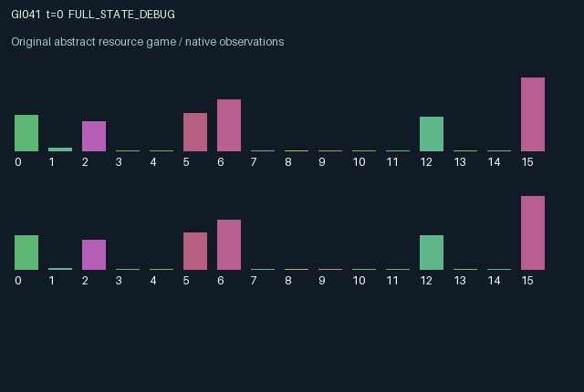

GI041 / LEGACY_ARRAY
astra-d2-00041: Circulating reservoirs with transported sediment
2 agents5 actions16 observation columns32 original horizonRuntime: PASS
Release verification episode
Untrained uniform legal actions. Actual JAX state sampled along the full original episode; full-state debug camera. No human performance or learning claim.

Run this game
crucibles play --game 41
Start Python locally, then open the address printed by the terminal. Installation, multiplayer, takeover and keyboard controls →
Objective, rewards & ending
Exact task contract
{
"objective": "Accumulate original per-agent rewards under the interaction rules in mechanism.md.",
"natural_termination": "No early terminal; original t >= 32 horizon.",
"exact_transition_and_reward_source": "def raw_step(self, key, state, actions):\n keys = jax.random.split(key, 2)\n available = state[\"reservoir\"] + state[\"transit_water\"] + state[\"rain\"]\n deposit = jnp.clip(\n state[\"sediment\"] + state[\"transit_silt\"] + 0.015 * state[\"reservoir\"],\n 0.0,\n 2.5,\n )\n banking = actions == 0\n pumping = actions == 1\n flushing = actions == 2\n dredging = actions == 3\n releasing = actions == 4\n banked = jnp.where(\n banking,\n jnp.minimum(0.7, jnp.minimum(available, 2.0 - state[\"cistern\"])),\n 0.0,\n )\n working_water = available - banked\n drawn = jnp.where(pumping, jnp.minimum(1.15, working_water + state[\"cistern\"]), 0.0)\n from_reservoir = jnp.minimum(drawn, working_water)\n from_cistern = drawn - from_reservoir\n remaining = working_water - from_reservoir\n cistern = state[\"cistern\"] + banked - from_cistern\n pulse = jnp.where(flushing, jnp.minimum(1.35, remaining), 0.0)\n eroded = jnp.minimum(deposit, 0.35 * pulse)\n removed = jnp.where(dredging, jnp.minimum(0.5, deposit), 0.0)\n sediment = jnp.clip(deposit - eroded - removed, 0.0, 2.5)\n remaining = remaining - pulse\n released = jnp.where(releasing, jnp.minimum(1.0, cistern), 0.0)\n cistern = cistern - released\n base_flow = jnp.minimum(remaining, jnp.where(banking, 0.04, 0.16))\n capacity = 6.0 - 1.1 * sediment\n overflow = jnp.maximum(remaining - base_flow - capacity, 0.0)\n reservoir = jnp.clip(remaining - base_flow - overflow, 0.0, capacity)\n outflow = pulse + base_flow + overflow + released\n useful_draw = drawn / (1.0 + 0.7 * deposit)\n utility = jnp.clip(useful_draw / state[\"demand\"], 0.0, 1.0)\n rewards = jnp.clip(\n 0.7 * utility\n - 0.05 * banking.astype(jnp.float32)\n - 0.07 * flushing.astype(jnp.float32)\n - 0.11 * dredging.astype(jnp.float32)\n - 0.025 * releasing.astype(jnp.float32)\n - 0.1 * sediment / 2.5\n - 0.08 * jnp.clip(overflow / 2.0, 0.0, 1.0),\n -1.0,\n 1.0,\n ).astype(jnp.float32)\n next_t = state[\"t\"] + jnp.array(1, dtype=jnp.int32)\n seasonal_rain = 0.06 + 0.12 * (0.5 + 0.5 * jnp.sin(2.0 * jnp.pi * next_t / 8.0))\n next_state = {\n \"t\": next_t,\n \"reservoir\": reservoir.astype(jnp.float32),\n \"sediment\": sediment.astype(jnp.float32),\n \"cistern\": jnp.clip(cistern, 0.0, 2.0).astype(jnp.float32),\n \"transit_water\": (0.88 * jnp.roll(outflow, 1)).astype(jnp.float32),\n \"transit_silt\": jnp.roll(0.8 * eroded + 0.02 * overflow, 1).astype(jnp.float32),\n \"rain\": (\n seasonal_rain\n + jax.random.uniform(keys[0], (2,), minval=0.0, maxval=0.07, dtype=jnp.float32)\n ).astype(jnp.float32),\n \"demand\": jax.random.uniform(keys[1], (2,), minval=0.65, maxval=1.1, dtype=jnp.float32),\n \"last_utility\": utility.astype(jnp.float32),\n \"last_out\": outflow.astype(jnp.float32),\n \"last_loss\": overflow.astype(jnp.float32),\n }\n done_all = next_state[\"t\"] >= 32\n dones = jnp.full((2,), done_all, dtype=jnp.bool_)\n info = {\"done_all\": done_all, \"legal_mask\": self.legal_actions(next_state)}\n return self.observe(next_state), next_state, rewards, dones, info"
}Declared per-step reward bounds: -1.0 to 1.0. Observability: source_defined.
Rules
Original mechanism document (historical status wording retained)
# astra-d2-00041: Circulating reservoirs with transported sediment This source proposes two controlled water cells joined in a synthetic circulation ring. Each cell has a main reservoir, a clean cistern, accumulated sediment and incoming water/silt buffers. The five actions are 0 bank water in the cistern, 1 withdraw water for current demand, 2 release an erosive flushing pulse, 3 remove sediment locally, and 4 release stored cistern water. All actions are legal; available physical stocks limit the action amounts. Incoming buffers and local rainfall first enter the cell. Banked water is separated from the main store; consumption draws from that store before the cistern. Sediment lowers useful output from a withdrawal and reduces reservoir capacity. Flushing recovers local capacity but sends eroded sediment onward. Dredging removes sediment without exporting it and carries a larger immediate utility cost. Automatic flow and overflow also leave the cell. Eighty-eight percent of outgoing water reaches the other cell's buffer, which is consumed by its next transition. Part of eroded sediment and a small overflow-associated silt contribution follow the same delayed route. Stored releases can supply the other cell without locally eroding sediment. The agent observes its own stores, sediment, incoming buffers, rainfall forecast, demand, previous demand satisfaction, outflow and overflow. Both roles see previous outflow and satisfaction of the other role, the aggregate stored-water report, seasonal phase, time and their role identifier. Current local demand, rainfall and sediment of the other role are not directly exposed. An eight-step rainfall cycle plus key-derived local noise controls replenishment; the supplied key also samples local next-step demand. Immediate consumption competes with storage, maintenance and water passed to the partner. Flushing has a delayed negative sediment externality and positive water externality. The circulation means either agent can alter both the other's future production conditions and later returning flows. Reward is 0.7 times bounded demand satisfaction minus action, sediment and overflow costs, with an explicit final [-1,1] utility cap. This is an abstract resource-routing model, not a calibrated hydrological simulator. Its familiar relation is a dynamic commons with upstream/downstream externalities, here closed into a two-cell ring. The causal proposal centers on separately transported water and sediment, capacity reduction and the distinction between erosive flushing and clean stored release. It makes no nonisomorphism, eligibility, compilation or learning-effectiveness claim. The interface is A2/O16/U5 with a 32-step clock and preserved terminal observations. Only source authorship was performed; isolated engineering and scientific assessments belong to the experimenter. No parent source, previous-source feedback or outcome data was supplied.
Commands
0Bank water
1Pump
2Flush
3Dredge
4Release reservoir water
Roles & abilities
agent_0 Original legacy agent; see mechanism and source
agent_1 Original legacy agent; see mechanism and source
Observation permissions
Training receives only the original observation rows. Role cameras use declared visibility; debug cameras are explicitly marked. Local benchmark records log debug exposure and role takeover history.
Exact observation layout
[
{
"slice": [
0,
16
],
"visibility": "exact original observe() below",
"source_code": "def observe(self, state):\n obs = jnp.zeros((2, 16), dtype=jnp.float32)\n obs = obs.at[:, 0].set(state[\"reservoir\"] / 6.0)\n obs = obs.at[:, 1].set(state[\"sediment\"] / 2.5)\n obs = obs.at[:, 2].set(state[\"cistern\"] / 2.0)\n obs = obs.at[:, 3].set(state[\"transit_water\"] / 8.0)\n obs = obs.at[:, 4].set(state[\"transit_silt\"] / 2.5)\n obs = obs.at[:, 5].set(state[\"rain\"] / 0.25)\n obs = obs.at[:, 6].set(state[\"demand\"] / 1.1)\n obs = obs.at[:, 7].set(state[\"last_utility\"])\n obs = obs.at[:, 8].set(state[\"last_out\"] / 8.0)\n obs = obs.at[:, 9].set(state[\"last_loss\"] / 8.0)\n obs = obs.at[:, 10].set(jnp.roll(state[\"last_out\"], 1) / 8.0)\n obs = obs.at[:, 11].set(jnp.roll(state[\"last_utility\"], 1))\n obs = obs.at[:, 12].set(jnp.sum(state[\"reservoir\"] + state[\"cistern\"]) / 16.0)\n obs = obs.at[:, 13].set(jnp.mod(state[\"t\"], 8) / 8.0)\n obs = obs.at[:, 14].set(state[\"t\"] / 32.0)\n obs = obs.at[:, 15].set(jnp.array([-1.0, 1.0], dtype=jnp.float32))\n return obs"
}
]Entity visibility & attributes
[]
Actual verification & provenance
Per-game execution receipt
{
"game": "gi041",
"status": "PASS",
"verification_revision": 2,
"source_sha256": "a9c5342dfbfebeefa626eae97896635a744c3d835ef1e92d8c436ff3a17694bd",
"seed": 20261101,
"runtime": {
"jax": "0.4.38",
"numpy": "1.26.4",
"devices": [
"TFRT_CPU_0"
]
},
"dimensions": {
"num_agents": 2,
"observation_size": 16,
"num_actions": 5,
"max_steps": 32
},
"checks": {
"eager_reset": {
"status": "PASS",
"seconds": 0.5329055786132812
},
"observation_spaces_legal_masks": {
"status": "PASS",
"seconds": 0.13136029243469238
},
"eager_step": {
"status": "PASS",
"seconds": 0.5101776123046875
},
"jit_reset": {
"status": "PASS",
"seconds": 0.2399921417236328
},
"jit_step": {
"status": "PASS",
"seconds": 0.29651308059692383
},
"eager_jit_integer_parity_float_measurement": {
"status": "PASS",
"seconds": 0.0009996891021728516
},
"jit_vmap_reset": {
"status": "PASS",
"seconds": 0.3648552894592285
},
"jit_vmap_step": {
"status": "PASS",
"seconds": 0.3949136734008789
},
"outer_autoreset_api": {
"status": "PASS",
"seconds": 0.7159290313720703
},
"full_original_horizon_episode_and_render": {
"status": "PASS",
"seconds": 1.7230193614959717
}
},
"human_scores": null,
"browser_controls": "PENDING",
"failures": [],
"elapsed_seconds": 5.660858631134033,
"float_parity_max_abs": 5.960464477539063e-08,
"numerical_parity": "UNDETERMINED_NONZERO_FLOAT_DIFFERENCE",
"raw_terminal_absorbing": "NOT_PART_OF_ORIGINAL_LEGACY_CONTRACT",
"terminal_outer_reset": "PASS",
"episode_steps": 32,
"scripted_random_returns": [
0.15228797867894173,
0.9886552058160305
],
"terminal": true,
"demo_information": "FULL_STATE_DEBUG",
"demo_frames": 33,
"render_roles_checked": 2
}Chromium control verification
{
"game": "gi041",
"status": "PASS",
"human_scores": null,
"engineering": true,
"checks": [
"catalog_selected_and_real_native_reset",
"dom_queue_and_native_step",
"second_participant_ownership_and_native_joint_step",
"all_roles_individually_controllable_no_role_cap",
"explicit_debug_camera",
"release_to_pure_ai_without_reset"
],
"ui_sha256": "15b5861d23b3c42811865c954d5a988280bbfd21cf8e93754be2437a027158c5",
"seconds": 3.616887331008911
}Original identity and file hashes
{
"id": 41,
"key": "gi041",
"title": "astra-d2-00041: Circulating reservoirs with transported sediment",
"summary": "",
"tags": [],
"family": "legacy_array",
"dimensions": {
"num_agents": 2,
"observation_size": 16,
"num_actions": 5,
"max_steps": 32
},
"source_sha256": "a9c5342dfbfebeefa626eae97896635a744c3d835ef1e92d8c436ff3a17694bd",
"manifest_sha256": "ac01cd214a975988d1a30cc4ffb6b281e323cae63529fdb6431603c8b546c410",
"files": [
{
"file": "candidate.py",
"sha256": "a9c5342dfbfebeefa626eae97896635a744c3d835ef1e92d8c436ff3a17694bd",
"bytes": 5810,
"origin": "work/exp_2/astra_generation/discovery_v2/initial/candidate_00041/attempt_00/candidate.py"
},
{
"file": "mechanism.md",
"sha256": "144f266e3ef7300c1841b26908c2a65cf016534de9c8d1e35759f80f40779d9f",
"bytes": 2935,
"origin": "work/exp_2/astra_generation/discovery_v2/initial/candidate_00041/attempt_00/mechanism.md"
}
],
"original_status": "LEGACY_SOURCE",
"original_saved_replay": false,
"release_validation": "PASS",
"human_scores": null,
"browser_validation": "PASS"
}